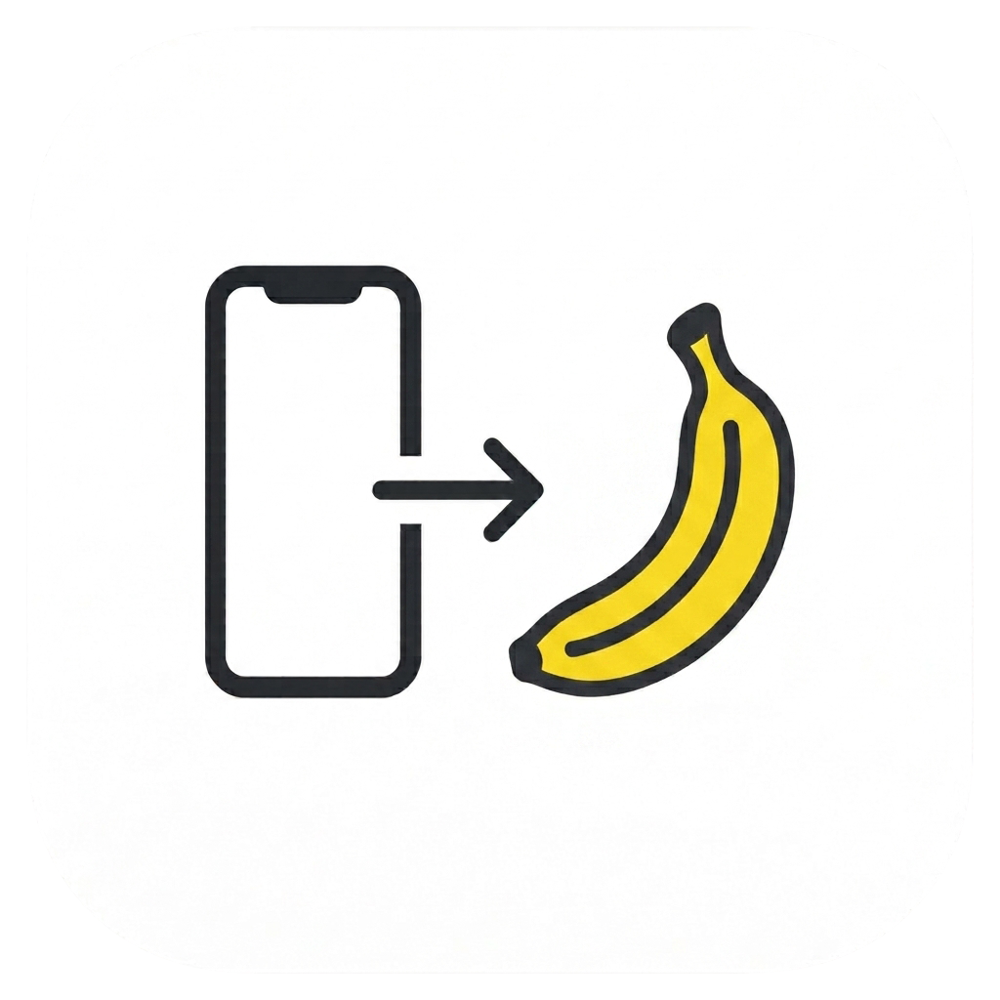
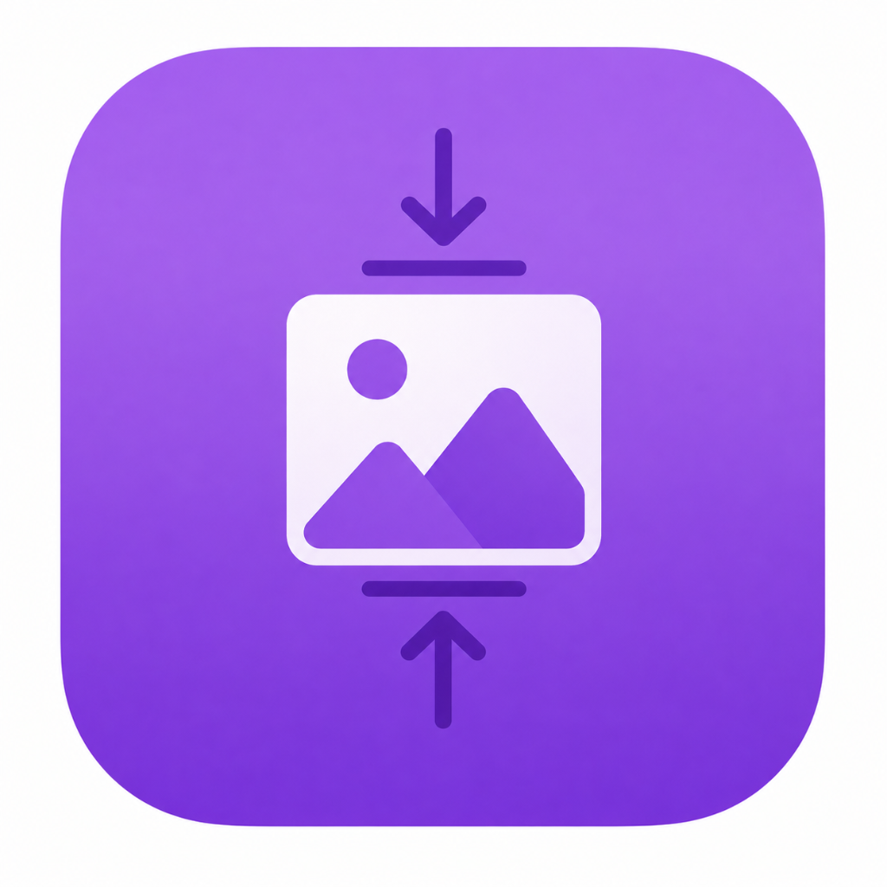

Le mie apps
Qui le app che ho realizzato e quelle WIP.

PubblicataBananaTransfer
Trasferisci foto e video da iPhone a Mac e PC. Applicazione leggera e veloce per importare ed organizzare i tuoi file multimediali.
v1.0
Vai

In sviluppoMiniCompressor
Converte e comprime immagini in batch, con watermark, profili colore e otto formati in uscita — tutta l'elaborazione resta in locale.
v1.0
Vai
In sviluppo
CartaPDF
Strumenti essenziali per organizzare, modificare, convertire e proteggere i tuoi documenti. Tutto in locale sul Mac.
v1.0
Vai